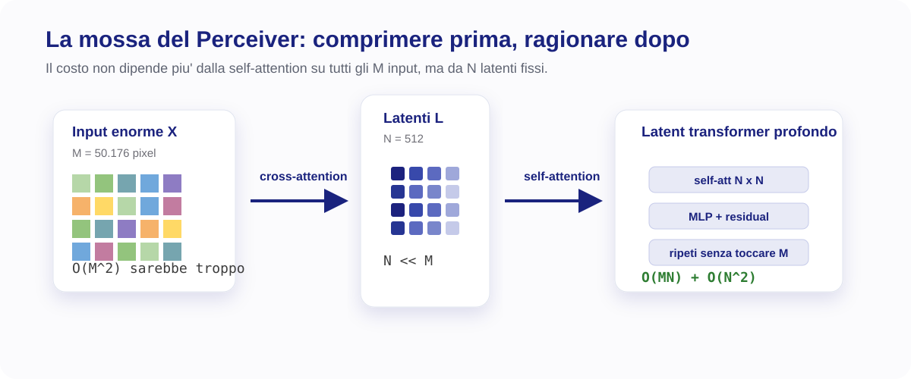
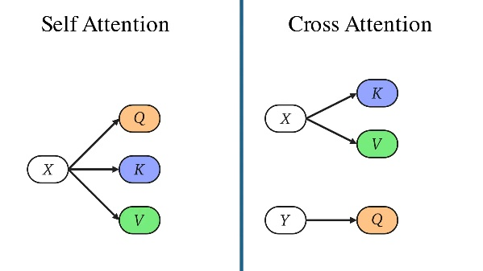
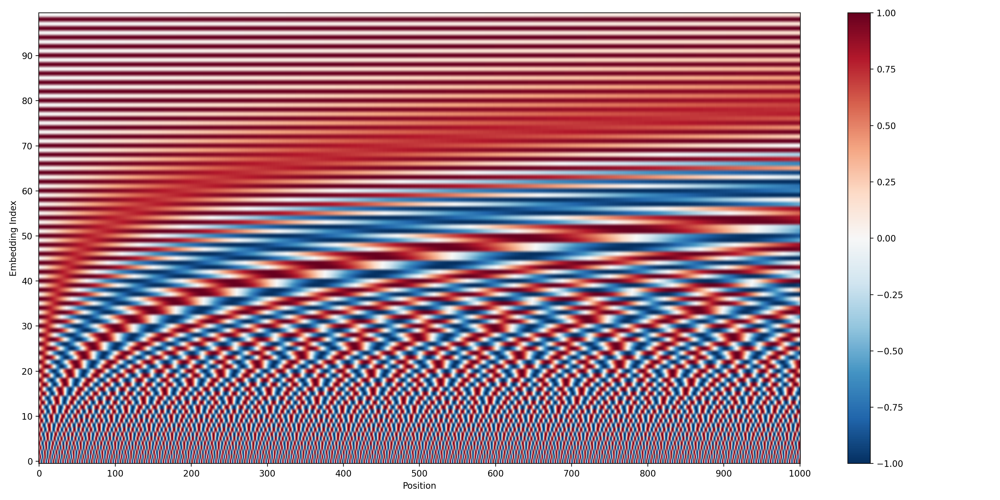
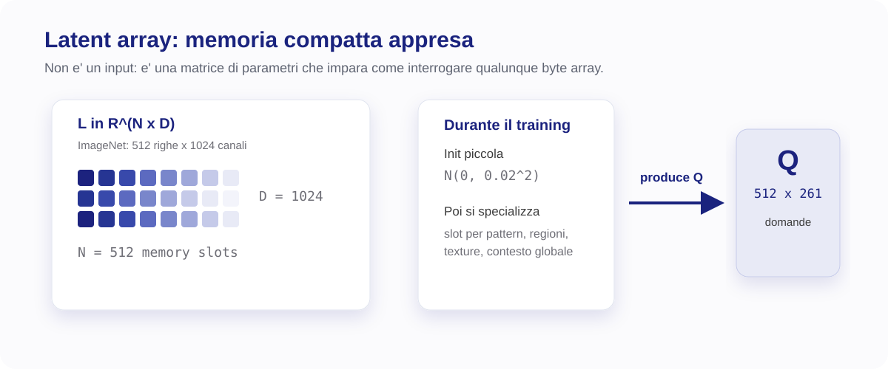
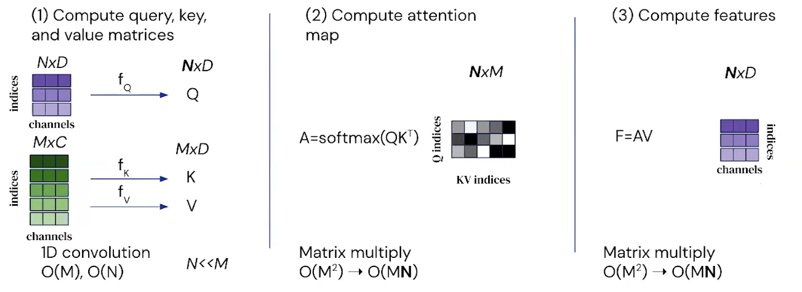
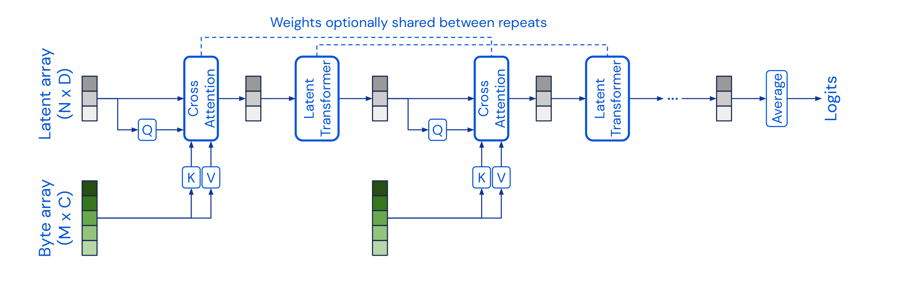
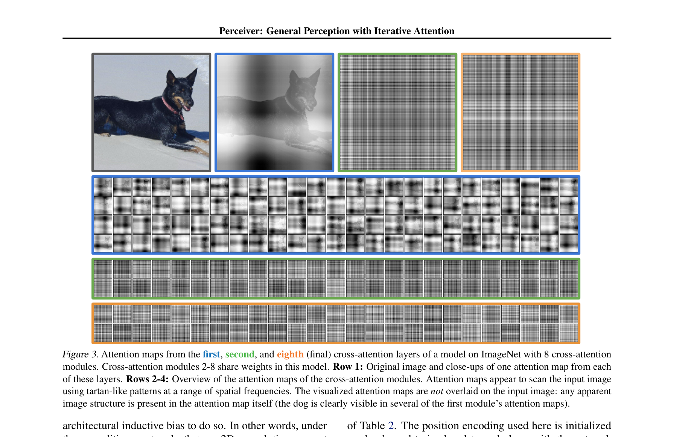

Il problema della complessità quadratica
Prima di capire cos'è il Perceiver, conviene capire perché esiste. Tutto parte da un limite fondamentale di due famiglie di reti che dominavano il deep learning.
CNN: scalabili ma specializzate
Le reti convoluzionali hanno un costo computazionale lineare nel numero di input — O(MKL), dove M sono i pixel, K la dimensione del kernel, L i layer. Perfette per le immagini perché sfruttano la struttura 2D locale: i vicini sulla griglia contano, i lontani no.
Ed è proprio questo il loro limite. La convoluzione 2D presuppone una griglia regolare di pixel. Per l'audio serve una conv 1D, per il video conv 3D, per i point cloud architetture completamente diverse (PointNet, PointNet++). Cambiare dominio = riprogettare la rete da capo.
Transformer: generali ma quadratici
Il Transformer ha un'unica primitiva — la self-attention — che funziona su qualsiasi sequenza di vettori. Non sa nulla di immagini, audio, testo: vede solo un insieme. Per questo è general-purpose.
Il prezzo? Ogni elemento confronta sé stesso con tutti gli altri. Per M input, la matrice di attenzione è M×M ⇒ costo O(M²). Su testo (poche centinaia di token) gestibile. Su un'immagine ImageNet 224×224 (= 50.176 pixel) la matrice avrebbe ~2.5 miliardi di entry. Impraticabile.
La via d'uscita: latent bottleneck
Il Perceiver prende il meglio di entrambi: la generalità del Transformer e la scalabilità delle CNN. Come? Introduce un latent bottleneck: un collo di bottiglia di dimensione fissa N ≪ M attraverso cui far passare l'input.
Il costo dell'attenzione crolla. E poiché N è fisso (es. 512), il costo cresce solo linearmente in M. Stesso modello per immagini, audio, video, point cloud: non serve riprogettare niente.

Un solo modello per tutte le modalità, a costo lineare nell'input. Il prezzo: l'input va prima compresso in N ≪ M latenti. Tutto il resto dell'architettura discende da questa scelta.
Dalla self- alla cross-attention
Capito il problema (O(M²)), vediamo concretamente come il Perceiver lo aggira. La chiave è una piccola modifica all'attention.
Self-attention: la versione classica
Nel Transformer standard, Query, Key e Value sono tutti calcolati dallo stesso input X. Ogni token "guarda" tutti gli altri token, e il risultato è una matrice di attenzione M×M (quadrata).
Cross-attention: l'asimmetria
Il Perceiver introduce un secondo array: i latenti L. E qui sta il trucco:
- Le Query Q vengono dai latenti L (sono solo N, pochi).
- Le Key K e i Value V continuano a venire dall'input X (sono M, tanti).
Il prodotto QKᵀ diventa una matrice rettangolare N×M. Il costo crolla da O(M²) a O(MN).

L'intuizione: Q, K, V come domanda-etichetta-contenuto
I latenti non sono input, sono parametri
Punto cruciale: i latenti L ∈ ℝ^(N×D) sono parametri appresi del modello, NON derivano dall'input. Sono "unità di memoria" — una base compatta che il modello usa per riassumere qualsiasi cosa gli si dia in pasto. Sono uguali per ogni esempio del batch e cambiano solo durante il training, mai durante l'inferenza.
| Aspetto | Self-Attention | Cross-Attention (Perceiver) |
|---|---|---|
| Sorgente Q | Input X (M token) | Latenti L (N latenti) |
| Sorgente K, V | Input X (M token) | Input X (M token) |
| Matrice attenzione | M×M (quadrata) | N×M (rettangolare) |
| Complessità | O(M²) | O(MN), con N≪M |
La cross-attention è un piccolo gruppo di N latenti che "interroga" gli M elementi dell'input. L'asimmetria N ≪ M è ciò che rompe la quadraticità del Transformer.
L'architettura in tre stadi
Hai capito il principio (cross-attention con latenti). Adesso vediamo come è organizzata l'intera rete.

I tre stadi
- Encoder a cross-attention: legge l'input enorme
X ∈ ℝ^(M×C_tot)e lo comprime nel latent arrayL ∈ ℝ^(N×D). - Latent transformer: raffina L con self-attention profonda, interamente nello spazio compresso (N×D).
- Testa di pooling + classificazione: aggrega gli N latenti finali e produce i logit per le classi.
Il blocco (encoder + latent transformer) viene poi ripetuto T volte: il modello "rilegge" l'input più volte, raffinando progressivamente i latenti. Vedremo questa ricorrenza al capitolo 9.
Le due proprietà che lo definiscono
Da questa scelta architettonica discendono i due tratti distintivi del Perceiver:
- Lo stesso modello gestisce modalità diverse (immagini, audio, point cloud, ...) senza modifiche.
- La profondità della rete è disaccoppiata dalla lunghezza dell'input: puoi impilare layer nel latent transformer senza che il costo cresca con M.
I numeri di ImageNet (da tenere a mente)
Questi sono i valori usati nel paper per la configurazione ImageNet — li incontrerai in tutto il forward pass:
| Simbolo | Valore | Significato |
|---|---|---|
M | 50.176 | pixel di input (224×224) |
C | 3 | canali grezzi (RGB) |
C_tot | 261 | canali per pixel dopo Fourier (3 RGB + 258 Fourier) |
N | 512 | numero di latenti (N ≪ M) |
D | 1024 | dimensione di ogni latente |
d_QKV | 261 | dim. interna cross-attention = min(D, C_tot) |
T | 8 | iterazioni con weight sharing |
ℓ | 6 | self-attention per blocco del latent transformer |
H | 8 | teste self-attention (d_head = 128) |
K | 64 | bande di frequenza Fourier per asse |
Tre stadi: encoder (cross-att comprime) → latent transformer (self-att raffina nei latenti) → pooling + classificatore. Il blocco encoder+transformer si ripete T=8 volte con weight sharing.
Input: il byte array
Iniziamo il forward pass. Il primo passo è trasformare un input grezzo (un'immagine, un waveform, un point cloud) in un formato che il Perceiver possa digerire uniformemente.
Rappresentazione uniforme: M × C
Qualsiasi input viene "appiattito" in un byte array di forma M × C: M elementi, ciascuno con C canali. È una rappresentazione uniforme: lo stesso formato per ogni modalità — è da qui che nasce la generalità del Perceiver.
- Immagine RGB 224×224: M = 224×224 = 50.176 pixel, C = 3 (R, G, B).
- Audio: M = numero di sample, C = 1 (mono) o 2 (stereo).
- Video: M = frame × pixel/frame, C = canali per pixel.
- Point cloud: M = numero di punti, C = 3 (coordinate x, y, z).
Nessuna delle strutture domain-specific (convoluzioni 2D per immagini, mel-spectrogram per audio, ecc.) viene usata. Tutto è ridotto a una matrice di numeri.
ImageNet: come si arriva al byte array
Per un'immagine RGB 224 × 224:
- Ogni pixel è rappresentato da 3 valori (canali RGB).
- L'immagine può essere vista come matrice
[224 × 224] (M) × [3] (C). - Il numero totale di pixel è
224 × 224 = 50.176. - Il numero totale di valori (byte) è
224 × 224 × 3 = 150.528.
L'immagine viene poi "linearizzata" (semplice reshape della griglia in una sequenza):

A questo punto abbiamo l'immagine cruda organizzata come matrice:
| Oggetto | Forma simbolica | ImageNet | Contenuto di una riga |
|---|---|---|---|
| Byte array (grezzo) | M × C | 50.176 × 3 | R, G, B del pixel |
È solo il contenuto "cromatico" dei pixel. Manca l'informazione posizionale: questo byte array da solo, dato al Perceiver, non distinguerebbe due immagini che differiscono solo per una permutazione dei pixel. La prossima sezione aggiunge la posizione tramite Fourier features.
Il byte array M × C è la lingua franca del Perceiver: qualunque sia la modalità di input (immagine, audio, video, point cloud), tutto finisce qui. Da questo formato uniforme nasce la generalità del modello.
Positional encoding: le Fourier features
Il byte array dice cosa contiene ogni elemento, ma non dove si trova. È un problema, perché l'attention è cieca alla posizione. Le Fourier features risolvono il problema in modo elegante.
Il problema: l'attention è cieca alla posizione
Un pixel con valore [R, G, B] contiene solo informazione di colore, ma non contiene informazione di posizione. Senza posizione, il modello non potrebbe distinguere due immagini identiche ma traslate, né accorgersi che permutare i pixel cambia l'immagine.
Per il Transformer su testo, il problema è risolto con sinusoidi sommate agli embedding. Per il Perceiver — che lavora su modalità arbitrarie — serve una soluzione più flessibile.
La soluzione: Fourier features
Le Fourier features sono una tecnica di mappatura che trasforma una posizione scalare (o vettoriale) x in uno spazio ad alta dimensione applicando seno e coseno a K frequenze diverse.
Formalmente, per ogni dimensione spaziale d, dato il valore di coordinata x_d ∈ [-1, 1]:
cioè: 2K valori sinusoidali (K frequenze, ognuna con sin e cos) + 1 coordinata grezza. Le basse frequenze catturano posizioni globali ("metà sinistra vs destra"), le alte catturano posizioni precise.

Tre scelte di design da memorizzare
1. Frequenze linearly spaced (non esponenziali come NeRF)
Le frequenze f_k sono linearly spaced tra 1 e μ/2, dove μ/2 è la frequenza di Nyquist corrispondente al sampling rate di riferimento. Per ImageNet 224×224: μ = 224, μ/2 = 112.
NeRF (Mildenhall et al., 2020) usa invece frequenze esponenziali: f_k = 2^k. Perché il Perceiver non le usa?
2. Si concatena anche la coordinata grezza x_d
Le Fourier features (sin/cos) sono periodiche: frequenze alte possono mappare posizioni diverse nello stesso valore (ambiguità). Concatenando il valore grezzo x_d (che è unico per ogni posizione), il modello ha sempre accesso alla posizione esatta, senza ambiguità.
Le sinusoidi forniscono sensibilità multi-scala; il valore grezzo fornisce l'identità posizionale.
3. Si concatena al colore, non si somma
Perché concatenare e non sommare? Perché la concatenazione preserva l'informazione di colore e posizione separatamente, mentre la somma le mescolerebbe in modo ambiguo. I Transformer per il linguaggio invece sommano il positional encoding agli embedding — il Perceiver fa la scelta opposta.
Il calcolo di C_tot = 261
- Canali RGB:
[255, 0, 0](normalizzati:[1.0, 0, 0]). - Posizione normalizzata:
(x, y) = (0.3, 0.7). - Fourier per x=0.3 con 3 frequenze illustrative (f₁=1, f₂=2, f₃=4):
[0.3, sin(0.3π), cos(0.3π), sin(0.6π), cos(0.6π), sin(1.2π), cos(1.2π)] = [0.3, 0.809, 0.588, 0.951, -0.309, -0.588, 0.809]
- Analogamente per y=0.7.
- Vettore finale:
[1.0, 0, 0, 0.3, 0.809, …, 0.7, …] ∈ ℝ²⁶¹
Dopo l'aggiunta delle Fourier features, ogni pixel è descritto da C_tot=261 numeri invece di C=3:
| Oggetto | Forma | ImageNet | Contenuto |
|---|---|---|---|
| Byte array (grezzo) | M × C | 50.176 × 3 | RGB |
| Byte array X (con Fourier PE) | M × C_tot | 50.176 × 261 | 3 RGB + 258 Fourier |
Le Fourier features danno al modello la posizione. È questa scelta — non l'architettura in sé — a rendere il Perceiver invariante alle permutazioni dei pixel: la posizione viaggia dentro l'input, non nell'ordine degli indici. Lo vedremo concretamente al capitolo 12.
Il latent array
Adesso abbiamo l'input pronto (byte array + Fourier). Manca l'altro protagonista: il latent array, che la cross-attention metterà in comunicazione con l'input.
Una matrice di parametri appresi
Il latent array L ∈ ℝ^(N×D) è una matrice di N vettori latenti. Per ImageNet: 512 × 1024. È interamente appresa: sono parametri del modello, esattamente come i pesi di una conv layer o di un linear layer.
- N = numero di latenti (slot, "unità di memoria"). Per ImageNet: 512.
- D = dimensione del canale/embedding di ogni latente. Per ImageNet: 1024.
Questi vettori non derivano direttamente dall'input e non hanno legame spaziale con token/pixel specifici: sono una base compatta che il modello usa per riassumere l'input.

Inizializzazione: piccolo è meglio
Ogni elemento di L è campionato da una gaussiana stretta:
I valori partono quasi tutti minuscoli (~±0.02). Perché così piccoli?
- Stabilità dei gradienti: se i latenti partissero con valori grandi, i prodotti
QKᵀsarebbero enormi, la softmax saturerebbe, e i gradienti diventerebbero instabili. - Neutralità: media zero significa che nessun latente ha un "vantaggio" iniziale su un altro.
- Sicurezza numerica: il troncamento a [-2, 2] esiste per sicurezza, ma con σ=0.02 è rarissimo che si producano valori oltre 0.1.
- Specializzazione graduale: partendo con valori piccoli e neutri, i latenti vengono "riempiti" progressivamente dall'informazione dell'input, e col tempo ciascuno si specializza (bordi, colori, texture, pattern globali...).
I due array che si incontrano
A questo punto abbiamo gli ingredienti che la cross-attention combinerà:
| Oggetto | Forma | ImageNet | Natura |
|---|---|---|---|
| Byte array X | M × C_tot | 50.176 × 261 | input (3 RGB + 258 Fourier) |
| Latent array L | N × D | 512 × 1024 | parametri appresi, init 𝒩(0, 0.02²) troncata |
Osservazioni chiave:
- Le due matrici hanno dimensione-feature diversa (261 vs 1024). Sarà la cross-attention a farle incontrare in uno spazio comune (
d_QKV = min = 261). - Il numero di righe è molto diverso (50.176 vs 512): è questa asimmetria che dà
O(MN)invece diO(M²). - Il vincolo fondamentale:
N ≪ M. Qui N/M = 512/50.176 ≈ 1%.
I latenti sono parametri, non dati. Il loro numero N è fisso e piccolo (512). Il loro contenuto è imparato dal training. È questa asimmetria N ≪ M a dare al Perceiver tutta la sua efficienza.
Il blocco di cross-attention
Il cuore del Perceiver. Vediamo passo per passo come gli N latenti "leggono" gli M elementi dell'input. È il capitolo più tecnico della lezione.

Passo 1 — LayerNorm pre-attention
Prima di ogni cosa, entrambi gli array (X e L) attraversano una LayerNorm. La LN normalizza ogni riga (ogni pixel, ogni latente) a media 0 e varianza 1, poi applica due parametri appresi γ e β. Niente di magico: stabilizza i valori che entrano nell'attention.
Passo 2 — dimensione interna d_QKV
Q, K, V devono avere la stessa dimensione-feature per poter fare il prodotto QKᵀ. Si sceglie:
Perché il minimo? L'input ha già solo 261 canali: proiettare K e V in dimensione maggiore (es. 1024) non aggiungerebbe informazione, sarebbe spreco di parametri e FLOPs. Scegliere il minimo tiene Q, K, V in dimensione compatta e usa 1024 solo dove serve davvero (come spazio dei latenti).
Passo 3 — proiezioni Q, K, V
Tre matrici di pesi apprese, senza bias (paper App. C: "linear layers" senza bias):
Le matrici W sono apprese: imparano a produrre query, key e value "ottimali" per il matching (riduzione di feature rumorose, ecc.). Inizializzate con Xavier Uniform.
L'asimmetria chiave: Q ha poche righe (N=512), K e V ne hanno tante (M=50.176). Stessa dimensione-feature (261), ma forma molto diversa. È da qui che nascerà la matrice rettangolare N×M.
Passo 4 — scaled dot-product attention
Quattro operazioni combinano Q, K, V:
(a) Score: prodotto QKᵀ
Misuriamo la compatibilità tra ogni query e ogni key. Due vettori allineati ⇒ score alto. Due vettori in direzioni diverse ⇒ score basso. La matrice risultante è 512×50.176: ogni riga è un latente, ogni colonna un pixel, e l'entry (i,j) dice "quanto il latente i trova interessante il pixel j".
(b) Perché lo scaling per √d_QKV?
Senza scaling, gli score avrebbero deviazione standard ≈ √d_QKV ≈ 16 (dopo LayerNorm Q e K hanno varianza 1, e sommare 261 prodotti porta la varianza a 261). La softmax saturerebbe (tutta la massa su un solo pixel) e i gradienti si annullerebbero. Dividendo per √d_QKV si riporta la varianza degli score a ~1.
(c) Softmax per riga
La softmax (applicata indipendentemente a ciascuna riga) trasforma score reali in probabilità: tutti i valori in [0,1], sommano a 1 su ogni riga. Ogni latente ottiene così un "budget di attenzione" da distribuire sui 50.176 pixel.
(d) Aggregazione: F = A·V
Ogni latente diventa una media pesata dei Value dell'input, secondo i pesi A calcolati nello step (c). Output: F ∈ ℝ^(512 × 261).

Passo 5 — output projection + residual
F vive in dimensione 261 (la dim di d_QKV). Va riportato a D=1024 per poterlo sommare ai latenti:
Passo 6 — MLP (feed-forward)
Pre-norm, espansione a 4D, attivazione GELU, compressione, residual:
L'espansione a 4D=4096 e il pattern hidden=4× sono standard GPT-2. Output finale del blocco:
Riepilogo: il blocco completo
| # | Operazione | Formula | Dimensione |
|---|---|---|---|
| Cross-Attention | |||
| 1 | LayerNorm pre-att. | L̃ = LN(L), X̃ = LN(X) | invariate |
| 2 | Q | Q = L̃·W_Q, W_Q ∈ 1024×261 | 512×261 |
| 2 | K | K = X̃·W_K, W_K ∈ 261×261 | 50176×261 |
| 2 | V | V = X̃·W_V, W_V ∈ 261×261 | 50176×261 |
| 3 | Scaled scores | S = QKᵀ/√261 | 512×50176 |
| 4 | Softmax | A_ij = e^S_ij / Σ e^S_ik | 512×50176 |
| 5 | Aggregazione | F = A·V | 512×261 |
| 6 | Output projection | Z' = F·W_o + b_o | 512×1024 |
| 7 | Residual | L' = L + Z' | 512×1024 |
| MLP (pre-norm, GELU, hidden 4D) | |||
| 8 | LN pre-MLP | L̃' = LN(L') | 512×1024 |
| 9 | Espansione + GELU | H' = GELU(L̃'·W₁ + b₁) | 512×4096 |
| 9 | Compressione | φ = H'·W₂ + b₂ | 512×1024 |
| 10 | Residual post-MLP | L̂ = L' + φ | 512×1024 |
Output del blocco: stessa forma di L (512×1024). Il blocco non cambia la dimensione del latent array, solo il suo contenuto — ora arricchito dell'informazione letta dall'input. È questa invarianza dimensionale che permette di ripetere il blocco T volte (cap. 9).
Il latent transformer
Dopo la cross-attention, i latenti contengono l'informazione dell'input. Adesso viene la parte "di pensiero" della rete: il latent transformer raffina i latenti facendoli comunicare tra loro.
Self-attention sui soli latenti
Il latent transformer è una pila di ℓ = 6 blocchi di self-attention che operano solo sui latenti (N×D), senza più toccare l'input. Qui i latenti "comunicano tra loro": è il passo che integra l'informazione raccolta dalla cross-attention.

Multi-head self-attention
Qui Q, K, V vengono tutti dai latenti (non dall'input):
La matrice di attenzione è quadrata N×N = 512×512, ma piccola: costo O(N²) trascurabile grazie al bottleneck. Il modello usa H=8 teste in parallelo, ciascuna in dimensione d_head = D/H = 128.
Architettura GPT-2
La struttura di ogni blocco del latent transformer è quella standard del decoder GPT-2 (Radford et al. 2019):
- LayerNorm
- Multi-head self-attention
- Residual connection
- LayerNorm
- MLP (hidden 4D, GELU)
- Residual connection
Non causale (niente maschere): ogni latente può vedere tutti gli altri liberamente. Il blocco è ripetuto ℓ=6 volte all'interno del latent transformer.
Cross-attention vs latent transformer: il confronto
| Aspetto | Cross-Attention | Latent Transformer |
|---|---|---|
| Sorgente Q | latenti | latenti |
| Sorgente K, V | input X | latenti |
| Tipo | cross-attention | self-attention |
| Dim. interna | d_QKV = 261 | D = 1024 (8 teste × 128) |
| Matrice attenzione | 512×50.176 (rettangolare) | 512×512 (quadrata) |
| Costo | O(MN) | O(N²) — piccolo |
La profondità del modello vive qui, nello spazio latente compresso. Impilare molti layer costa O(N²), non O(M²). Ecco perché la profondità della rete è disaccoppiata dalla dimensione dell'input — uno dei punti chiave del paper.
Weight sharing e iterazioni
Una delle idee più importanti del Perceiver: il blocco cross-attention + latent transformer non viene applicato una volta sola, ma ripetuto T volte condividendo i pesi. Questo trasforma il modello in qualcosa di sorprendente.
T iterazioni con pesi condivisi
Il blocco (cross-att + latent transf) viene riapplicato T = 8 volte agli stessi latenti, condividendo i pesi tra le iterazioni — con un'eccezione importante: il primo blocco ha pesi propri.

𝒩(0, 0.02²)); dalla seconda in poi sono già "popolati" di informazione. Due regimi così diversi non possono condividere gli stessi pesi senza causare instabilità di training. Quindi CA₁ e LT₁ hanno pesi unici; CA₂...CA_T e LT₂...LT_T condividono ciascuno un set di pesi.
Formalmente è un RNN
Questa struttura ha una forma matematica precisa: il Perceiver con weight sharing è formalmente un RNN.
| Componente RNN | Nel Perceiver |
|---|---|
| Stato ricorrente | latent array L^(t) (dim fissa 512×1024) |
| Input (costante nel tempo) | byte array X |
| Funzione di transizione | il blocco shared (cross-att + latent transf) |
| Stato iniziale | L^(0) (parametro appreso) |
A differenza di un RNN classico, però, a ogni passo i latenti accedono all'intero input simultaneamente, non a un elemento alla volta. È un RNN che "rilegge tutto" ogni volta.
L'effetto: meno parametri, più accuratezza
Il weight sharing non è solo un'ottimizzazione: è un regolarizzatore potente. Dal Tab. 7 del paper:
| Configurazione | Parametri | Train | Val | Gap |
|---|---|---|---|---|
| Senza weight sharing | ~326M | 87.7% | 72.9% | −14.8% (forte overfitting) |
| Con weight sharing | ~45M | 79.5% | 78.0% | −1.5% (no overfitting) |
⇒ ~7× meno parametri E +5.1% di accuracy. Senza sharing il modello memorizza troppo (gap train/val di 14.8%); con sharing il gap si riduce a 1.5%. Costringendo il modello a usare lo stesso "modulo di raffinamento" in tutte le iterazioni, si forza una generalizzazione migliore.
Cosa succede nel backward pass
Sia w = 2.0 un peso condiviso tra le iterazioni t=2 e t=3. Nel backward ogni istanza produce un contributo:
I contributi si sommano (come in un RNN srotolato — BPTT, back-propagation through time):
Con learning rate η = 0.01:
In PyTorch questo accade automaticamente: quando più nodi del grafo computazionale puntano allo stesso nn.Parameter, i gradienti calcolati in backward() vengono accumulati sul .grad del parametro.
Il weight sharing trasforma il Perceiver in un RNN che raffina progressivamente i latenti, rileggendo l'input T volte con lo stesso "modulo di raffinamento". Agisce da regolarizzatore: meno parametri, niente overfitting, più accuratezza.
Output: pooling e classificatore
Dopo T iterazioni di raffinamento, dai latenti finali bisogna arrivare a una predizione. Tre passi semplici.

I tre passi
1. Global average pooling — media degli N latenti finali, riga per riga:
Da N=512 vettori si ottiene un singolo vettore h di dimensione 1024.
2. Classificatore lineare — proietta nello spazio delle classi (1000 per ImageNet):
3. Softmax + argmax — logit → probabilità → classe:
Due dettagli che il paper sottolinea
- Niente token [CLS]: a differenza di BERT/GPT, il Perceiver non usa un token speciale per il pooling. La media è la soluzione più diretta e non introduce nuovi parametri.
- Pooling prima della proiezione (fix del paper, App. F). Le due operazioni (pooling e proiezione lineare) commutano matematicamente, ma fare il pooling prima riduce il costo computazionale (proietti UN vettore invece di N) e stabilizza il training.
Il pooling medio comprime gli N latenti in un solo vettore h ∈ ℝ^D, di dimensione fissa — qualunque sia N. Questo permette di collegare un classificatore lineare standard, identico per qualsiasi modalità di input. Massima generalità con minimo sforzo.
Dettagli di training (ImageNet)
L'architettura è chiara. Adesso vediamo come si allena. Tre dettagli importanti: ottimizzatore, schedule, e una scelta controintuitiva sul dropout.
L'ottimizzatore: LAMB
Il paper usa LAMB (You et al., 2020), non Adam. Citazione dal paper: il Perceiver è più facile da ottimizzare con LAMB rispetto ad Adam.
LAMB (Layer-wise Adaptive Moments for Batch training) è un ottimizzatore studiato per allenamenti con batch grandi: applica una normalizzazione per-layer del rate di aggiornamento, evitando che alcuni layer "saltino troppo" mentre altri restano fermi.
Schedule del learning rate: step decay
- Epoche totali: 120
- LR iniziale:
4 × 10⁻³ - Step decay: ÷10 alle epoche 84, 102, 114
- Niente cosine annealing, niente warmup
Schema "vecchia scuola": rate alto per la maggior parte del training, poi tre tagli netti verso la fine per fissare i pesi.
Niente dropout (e perché)
Sorprendentemente, il Perceiver non usa dropout. Citazione dal paper (App. C):
L'intuizione: il modello ha già forti pressioni regolarizzanti:
- Il latent bottleneck N≪M comprime brutalmente l'informazione.
- Il weight sharing riduce i parametri di ~7×.
- Il weight decay nell'ottimizzatore.
- La data augmentation aggressiva: RandAugment (Cubuk et al., 2020).
Aggiungere dropout sopra tutto questo soffoca la capacità del modello invece di aiutarlo.
Dimensione del modello
~45M parametri, paragonabile a una ResNet usata su ImageNet. Tutto sommato, non un modello enorme — e gran parte di quei parametri sta nella prima cross-attention + latent transformer (gli unici non condivisi).
Training "essenziale": LAMB, 120 epoche con step decay, niente dropout, ~45M parametri. La regolarizzazione viene dall'architettura (bottleneck + weight sharing), non dai trucchi di training.
I risultati che "vendono" il Perceiver
Abbiamo visto tutta l'architettura e il training. Adesso: funziona? E cosa dimostra di unico rispetto agli altri modelli? Questo è il capitolo cruciale per l'esame.
ImageNet su pixel grezzi: competitivo senza prior 2D
Top-1 accuracy sulla validation set di ImageNet (Tab. 1 del paper):
| Modello | Top-1 | Note |
|---|---|---|
| ResNet-50 | 77.6% | conv 2D |
| ViT-B/16 | 77.9% | patch 2D |
| Transformer puro (64×64, FF) | 57.0% | costretto a downsamplare per O(M²) |
| Perceiver (FF) | 78.0% | 50.176 pixel grezzi, nessuna conv 2D |
Il Perceiver è competitivo con ResNet-50 e ViT-B/16 (entrambi con forte prior 2D) lavorando direttamente sui pixel grezzi. Il Transformer puro fallisce perché la complessità O(M²) lo costringe a comprimere l'input a 64×64, perdendo dettaglio.
Permutation invariance: il colpo di scena
Ed eccoci al risultato che il paper usa per argomentare la vera generalità del Perceiver. L'esperimento: mescolare i pixel di tutte le immagini con la stessa permutazione fissa. Un modello che codifica la posizione "nell'input" (via Fourier features) dovrebbe essere immune.
| Modello | ImageNet raw | ImageNet permuted | Δ |
|---|---|---|---|
| Perceiver (Fourier features) | 78.0 | 78.0 | 0.0 |
| Perceiver (learned position encoding) | 78.0 | 70.9 | −7.1 |
| ViT-B/16 (FF) | 76.7 | 61.7 | −15.0 |
| ResNet-50 (FF) | 73.5 | 39.4 | −34.1 |

Il Perceiver con Fourier features è invariante alla permutazione: 78.0 → 78.0, zero calo. La ResNet crolla (73.5 → 39.4) perché la conv 2D assume che i vicini nella griglia siano correlati. La versione con learned position encoding scende a 70.9 ⇒ è la scelta delle Fourier features, non l'architettura in sé, a dare l'invarianza. Il paper usa questo per dimostrare che il Perceiver non sfrutta alcun bias 2D nascosto: è davvero general-purpose.
Altri domini, stesso modello
Senza modificare l'architettura, il Perceiver è stato applicato anche ad altre modalità:
| Dominio | Perceiver | Baseline specializzato |
|---|---|---|
| AudioSet (audio raw) | 38.3 mAP | CNN-14: 43.1 mAP |
| AudioSet (audio + video) | 43.5 mAP | — |
| ModelNet-40 (point cloud, solo xyz) | 85.7% | PointNet++: 91.9% |
Su ModelNet il gap è dovuto al fatto che il Perceiver usa solo le coordinate (x, y, z) grezze, senza feature geometriche specializzate. Conferma comunque la generalità.
Effetto del weight sharing (recap)
| Configurazione | Top-1 val | Parametri |
|---|---|---|
| Senza weight sharing | 72.9% | ~326M |
| Con weight sharing | 78.0% | ~45M |
Ablation: cosa conta davvero
Quali componenti del Perceiver sono indispensabili e quali sono dettagli? Gli ablation studies del paper rispondono. Sono il modo migliore per capire l'architettura "smontandola".
1. Il latent bottleneck è essenziale
Esperimento estremo: si rimuove completamente il latent transformer e si usano solo cross-attention ripetute. Questo elimina il bottleneck latente.
| Cross-attends (senza self-att.) | Accuracy |
|---|---|
| 4 | 39.4% |
| 8 | 45.3% |
| 12 | OOM (Out of Memory) |
| 8 con self-att. (modello completo) | 78.0% (+32.7%) |
Senza il latent transformer, il modello collassa: la mancanza di comunicazione tra i latenti dopo ogni cross-attention impedisce l'integrazione delle informazioni. Il bottleneck latente non serve solo a ridurre i costi: è il meccanismo che consente l'integrazione globale dell'informazione.
2. Interleaved > at-start (il modo di alternarle)
Si confrontano due strategie per le cross-attention:
- Interleaved: cross → self → cross → self → ... (pesi cross condivisi).
- At-start: tutte le cross applicate in sequenza prima del processo latente.
| Configurazione | Cross-attends T | Accuracy |
|---|---|---|
| Interleaved | 1 | 76.7% |
| Interleaved | 2 | 76.5% |
| Interleaved | 4 | 76.5% |
| Interleaved | 8 | 78.0% |
| At start | 8 | 73.7% |
Con 8 cross-attend tutte all'inizio, il modello deve comprimere l'intera informazione in un'unica lettura prolungata. Con interleaved, alterna fasi di "lettura" e "ragionamento" latente: ogni re-lettura avviene con latenti già parzialmente raffinati. Il modello deve ri-leggere l'input più volte in modo adattivo.
3. Weight sharing = regolarizzatore
| Configurazione | Val (%) | Train (%) | Gap |
|---|---|---|---|
| Senza weight sharing (326M) | 72.9% | 87.7% | −14.8% |
| Con weight sharing (45M) | 78.0% | 79.5% | −1.5% |
Già visto al cap. 9, ma qui in numeri completi: il weight sharing è il più potente dei regolarizzatori del Perceiver. 7× meno parametri E +5.1% accuracy.

4. Fourier features: numero di bande
Più bande di frequenza catturano dettagli spaziali più fini. I risultati migliorano fino al valore di Nyquist (determinato dalla risoluzione dell'immagine). Oltre la frequenza di Nyquist non si ottiene alcun beneficio: le frequenze in più sono ridondanti.
Per ImageNet (224×224): K=64, f_max=112 — esattamente la frequenza di Nyquist.
5. Effetti di N, D, ℓ
| Parametro | Effetto |
|---|---|
| N (latenti) | ↑ aiuta monotonamente (256→512→1024 entro l'intervallo testato) |
| D (dim canale) | ↑ aiuta fino a un punto; oltre, overfitting (senza weight sharing) |
| ℓ (self-att per blocco) | ↑ aiuta ma con rendimenti decrescenti (2→4 guadagno grande, 4→8 piccolo) |
Lezioni dagli ablation
- Il latent bottleneck è essenziale: senza, ≤45% accuracy.
- Interleaved > at-start: rileggere l'input più volte, con latenti raffinati progressivamente.
- Weight sharing: 7× meno params, +5.1% accuracy.
- Fourier: più bande fino a Nyquist, oltre non serve.
- Config ottimale ImageNet: N=512, D=1024, T=8 interleaved + weight sharing, ℓ=6, K=64.
Smontando il Perceiver, tutto torna alle tre intuizioni: bottleneck per integrare globalmente, iterazione per raffinare, weight sharing per generalizzare. Tutto il resto è dettaglio implementativo.
Backward pass: i risultati chiave
Il backward pass del Perceiver è meccanico: chain rule applicata blocco per blocco. Però ci sono tre risultati che vale la pena conoscere a memoria, soprattutto per l'orale.
Ordine del backward
Il backward attraversa l'architettura in ordine inverso rispetto al forward:
Si parte dalla loss ℒ e si propaga indietro fino all'input, calcolando i gradienti per ogni parametro lungo la strada.

p - y, somma dei gradienti sui pesi condivisi e residual come percorso diretto del gradiente.Risultato 1: il celebre ∂ℒ/∂z = p − y
Il forward finale ha questa struttura:
Combinando softmax + cross-entropy, il gradiente rispetto ai logit è notevolmente pulito:
cioè: la differenza tra la probabilità predetta p e il vettore one-hot della classe vera y. Nessuna derivata complicata, nessuna divisione, nessuna instabilità numerica. Per questo softmax e cross-entropy vanno insieme: derivate separate sarebbero un casino, combinate si semplificano.
∂ℒ/∂z = p − y è una delle domande più frequenti in qualsiasi corso di deep learning con softmax+CE. Memorizzalo a livello automatico.
Risultato 2: gradienti dei pesi condivisi (BPTT)
Quando un peso W è usato in più blocchi del forward (caso del weight sharing del Perceiver), nel backward ogni istanza produce un contributo. Per il training corretto, questi contributi si sommano:
È lo stesso meccanismo di un RNN srotolato (BPTT, back-propagation through time). In PyTorch è automatico: quando più nodi del grafo computazionale puntano allo stesso nn.Parameter, i gradienti calcolati in backward() vengono accumulati sul .grad del parametro.
Sia w = 2.0 un peso condiviso tra t=2 e t=3. Nel backward:
Il gradiente effettivo è la somma:
Con learning rate η = 0.01:
Attenzione: fare l'aggiornamento due volte (una con −0.3 e una con +0.1) darebbe un risultato diverso e sbagliato. L'accumulazione deve avvenire prima del passo dell'ottimizzatore, non dopo.
Pesi del primo blocco: non partecipano alla somma
I pesi di CA₁ e LT₁ sono parametri separati (cap. 9): i loro gradienti stanno in un accumulatore diverso, non si sommano con quelli dei blocchi shared, e vengono aggiornati in modo indipendente.
Risultato 3: residual connection = "gradient highway"
Una residual connection è L' = L + f(L). Nel backward:
Il termine identità I garantisce che il gradiente trovi sempre un "percorso diretto" indietro, anche se la parte ∂f/∂L si attenua o esplode. Per questo le ResNet (e il Perceiver) riescono ad addestrare reti molto profonde senza vanishing gradient.
Cosa NON memorizzare
Le derivazioni dettagliate dei gradienti di:
- LayerNorm (3 termini:
1/(σ+ε)volte la media e tutto il calcolo della deviazione) - Scaled dot-product attention rispetto a Q, K, V (tre formule lunghe)
- Output projection W_o, MLP W₁, W₂
Sono chain rule applicata meccanicamente. Sapere che si fanno e capire il flow conta più che ricordare ogni formula. Per memorizzare: forward + i tre risultati sopra bastano.
Del backward del Perceiver, ricorda tre cose: (1) ∂ℒ/∂z = p − y per softmax+CE; (2) i gradienti dei pesi condivisi si sommano (BPTT); (3) le residual creano un "gradient highway" che permette le reti profonde.
🎉 Hai completato la lezione!
Adesso conosci il Perceiver da zero: dal problema della quadraticità, fino al backward pass e ai risultati di permutation invariance.
Per testare la memoria → perceiver_quiz.html (75 flashcard con spaced repetition).
Per il ripasso visivo → perceiver_teoria_v2.pdf (23 pagine con striscia-pipeline).